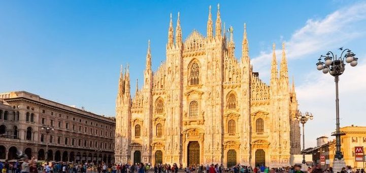
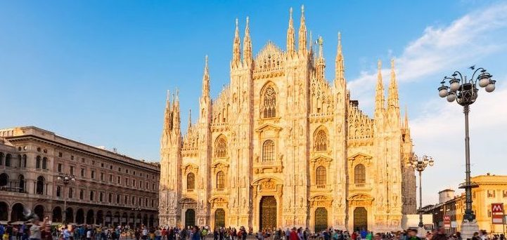

Day One

We arrived in Amsterdam! We made the flight with plenty of time to spare because I wanted to do some shopping in duty free (I bought some MAC make up and some OPI nail polish - you never really know if you've made a saving). I normally travel alone and I can really appreciate the benefit of having someone with you to sit down and watch the bags leaving you to wander around with nothing but a purse ! Our flight boards a little late and immediately we get sight of some really rowdy passengers, Brian suggests it's to be expected on a flight to Amsterdam, there's a lot of drunk, noisy people, luckily the flight is only 55 minutes but I am super grateful for my eye mask and ear plugs. Although I knew they were noisy I feel like I must have missed something because next thing I know we're being told to stay in our seats because the police will be escorting the rowdy passengers off the plane!! This is met by a big cheer (this includes Brian) and a lot of "thank god for that." The Netherlands police are tall and efficient looking.
We then have the quickest breeze through the airport, picking up baggage, hopping on a train to the center, and arriving, all in the space of about 20 minutes. In Amsterdam Central we quickly navigate to our Tram and there's a short walk to the flat. On the way Brian tells me to look out for places called "Coffeeshops" - these sell Weed, I (somewhat reluctantly) point one out on the walk and he says let's go in, I tell him that I'm nervous, not so reassuringly he says he's nervous too! Before we can think twice the door is being opened and we're ushered in, I look at the menu and start reading things out to him, in the end we go for a Muffin each. As we're leaving he says he'll go back later for something more serious (all talk). Hanneke's flat is lovely and there are post it notes dotted all over the place for me, wifi password, how to work the blinds, please water the plants, you can eat these chocolates! It's nice being in a home rather than a hotel. Review of the muffin to come shortly. (More photos here.)
Day Two

Rocky start to our journey, I have a scratchy throat that started to progressively get worse since the flight and I spend the night painfully swallowing. Brian has had a muscular pain in his arm for a few days now that has been getting worse - so neither of us get any sleep. I desperately put together some crazy concoction of cinnamon, ginger, honey and vinegar ... surprisingly it's delicious but it's still not strong enough. I wait until the shops open and then I go looking for painkillers, cough syrup, lemsip, anything I can find. Turns out Amsterdam is pretty rubbish for painkillers (except marijuana) Lidl has a box of parecetamol, I go to the next supermarket who has one bottle of cough syrup. I buy everything I can find (but it would later turn out that we need to find an actual pharmacy for the things we were after). It takes me and Brian a little while to get to a state that is ready to embark on our first day but once we're out we decide to head to the Medieval Centre and the Red Light District.
Definitely recommend visiting the Red Light District in the day, we're told it's full of drunk tourists at night. We follow my guidebook on a walking tour of Oude Kerk (old church) and the Red Light District, no photos allowed, it's nice to see such a famous side of Amsterdam, if not just to say that you've done it, actually seeing the women in the windows scares me a little. The weather is chilly and I'm getting jealous of all the people riding bikes, I hope we get a chance to rent a couple on our journey - although I asked Brian if he can cycle with one arm to which he says no, so I might need to sit him on my sidecar or something. Brian has been begging to go into a sweet shop so we visit the first one we see, I get some sour jelly beans and he fills up a giant pot of licorice, I try one and it is honestly the most disgusting sweet it is FULL of salt, it tastes like a block of salt, I'm not sure how (or why) he's eating them. Various crazy shops here, the craziest sadly don't allow photos ("The Condominium" for one).
After our feet start to hurt we start going back to the flat, the trams seem to be our preferred method of going around, they're faster than buses and you get to see your surroundings rather than the metro, plus it comes as a day ticket so you can just hop on and off whenever you like. We get back to the flat and although we had the intentions of going back out (Brian is desperate to see the Torture Museum which worryingly is open until 11pm). Sadly due to our ailments we end up being knocked out until the following morning.
Side Note: I'm not going to give a comprehensive review of the muffin, suffice it to say that I will never again be having one.
As usual more photos here.
Day Three

Woke up feeling much better after about 10 hours sleep. Still feeling the muffin (Brian says that the effects wear off after 6 hours but I continue to feel my head spinning ALL DAY). Brian still has a sore arm, we decide to visit some markets today and follow another walking tour in my guidebook.
We head to De Pijp today to browse Albert Cuypmarkt, Amsterdam's largest street bazaar, it's full of cheese, fish, clothes and more waffles than anyone can possibly manage. Waffles are our first stop, we end up walking up and down this market about 4 times, the first couple times for pleasure, the rest due to navigation issues. It is a long market, we stop at either end for drinks and lunch and to get the guidebook out to figure out where we're going next.
We decide to follow a walking tour from my book of the Southern Canal Ring, this includes a small detour to visit the Torture Museum (Brian's idea, obviously) where we had the delight of an old Iron Maiden, a guillotine and a few creative ways of silencing your enemies before setting off again to another market (Bloemenmarkt). This walking tour involved so many canals that seem to run across each other and also a lot of bridges, we may have given in and stopped for a selfie at one of them - the one that my guide says all the insta girls are doing it on, and truth be told they really were.
Again, once our feet start to hurt we navigate our way back home, getting used to this tram business. (Not sure how we would survive without the Citymapper app though)
Managed to take a lot of photos today, see here.
Day Four
Last night the pain in Brian’s arm is too much and I book an appointment with a doctor near us, we’re seen really quickly in the morning and I’m really impressed with their efficiency. We pick up our prescription and head home (few navigation issues as usual, we headed out so quickly our phones weren't fully charged and we didn't bring the power bank so both phones die halfway there meaning we're left with an actual map and common sense, we do get home, eventually). This feels like a lazy day, my throat is scratchy again (the cold air seems to make it feel worse).
Once home we both just chill, I make porridge and we have a stroopwafel. As it looks like we might be spending most of today here I thought that I would focus today’s photos on our lovely flat, I really like the minimalist but cosy vibe here, feels very lucky to have quite a big flat in such a packed city, Amsterdam has a very London vibe at times, except that there’s a bit of a disregard for pedestrians (we had to walk in some muddy grass earlier because the cycle lane was too busy and there wasn’t anything else). Hopefully we both feel a bit more up for a bike ride later.
I really notice just how many plants Hanneke has here after she's asked me to water them ! There's loads!
More flat photos here.
Day Five

Today our only plan was to go to Vondelpark, a nice big park that is close to where we staying and is the largest park in Amsterdam. As we make our way there it dawns on us that this is probably a great time for Pokémon Go, this ends up consuming most of our day as Amsterdam is full of Pokémon. Specifically Christmas Pikachu.
I get hungry from all the walking around, as it's a Sunday there's not much open but we stop at a cool looking place called "Sla" that looks hip and trendy, as we walk in Brian mentions that he thinks Sla means Salad... He is totally right and the menu is 100% nothing but Salad. Straight on our heels we head out the door (I'm not against salad but I was hungry.) We eventually find a nice Italian place on the corner of Vondelpark (I must admit it feels a little silly to stop at an Italian place when we're going to be in Italy in a few days but who tires of pizza?). The place is really nice and has some creative uses for pallets which we appreciated.
In Vondelpark Brian mentions that he caught a purple Pokémon (that's usually red) he didn't seem phased by this ... I started yelling that he's caught a shiny Pokémon (odds of this are 1 in 450) I still can't believe I witnessed a shiny being caught... I was happy with my Christmas Pikachu before I saw this.
Brian's arm is feeling much better today and we may get a bike tomorrow to explore Amsterdam the way the locals do, although we must admit we won't have the total disregard for pedestrians... it can be hard walking around with so many bikes everywhere and today we saw a poor tourist get plowed over by a bike because she was in the bike lane.
We hop on a tram to the center to pick up a few things then we get back to Vondelpark to grab a few more Pokémon before getting back to the flat.
More photos here.